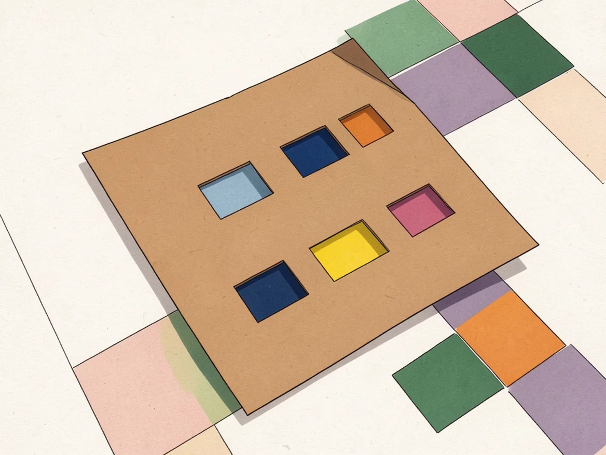
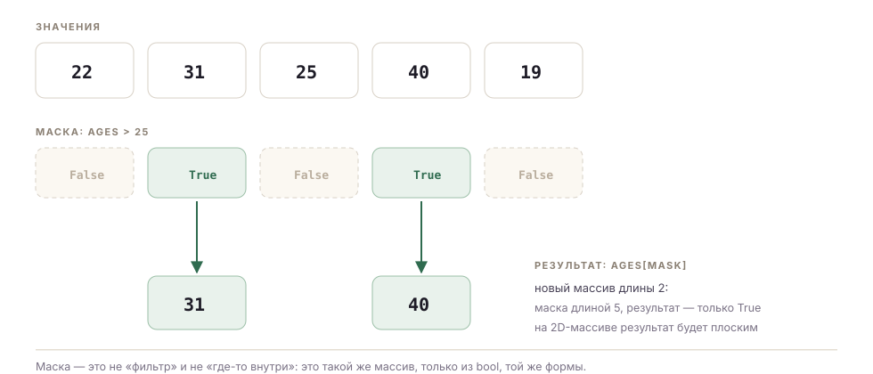

Индексация и маски: трафарет поверх сетки Как выбрать элементы по условию — и почему маска это массив, а не фильтр
Срез отвечает на вопрос «где это лежит», маска — на вопрос «подходит ли элемент». Вторая операция
и есть фильтрация: та самая, что в pandas станет df[mask], а в SQL — WHERE.
Словарь главы — если забыли термины
- срез
- Рамка по оси:
arr[1:3]. Обычно возвращает view. - булева маска
- Массив
True/Falseтой же формы; True оставляет элемент. - fancy indexing
- Индексация списком номеров:
arr[[0, 2, 4]]. Всегда копия. - view
- Окно в те же данные: правка видна в исходном массиве.
- np.where
- Выбор значения по условию:
np.where(mask, a, b).
01Зачем это backend-разработчику
- Фильтрация — половина работы с данными. «Заказы дороже 1000», «пользователи из Москвы», «логи за час» — всё это маски.
- Одна модель до SQL.
ages[ages > 25],df[df.age > 25]иWHERE age > 25— три записи одного действия. - Векторные условия. Сравнение массива с числом возвращает массив bool, а не одно значение. Это ломает привычки из Python.
- Собеседование: «чем маска отличается от where», «почему
andне работает», «срез — это копия?» — типичные вопросы про NumPy.
02Ассоциация-якорь: трафарет
Маска — это трафарет с прорезями. Вы накрываете им сетку данных: видно только то, что попало под прорези. Маска либо той же формы, что и сетка, либо одномерная по длине оси — иначе она не ляжет.
Срез — это рамка. Она показывает прямоугольную область («строки 1–2, столбцы 2–3»), не спрашивая про значения. Рамка и трафарет — разные инструменты, и путать их — типичная ошибка.

03Ассоциативный ряд: восемь звеньев
- arr[i]элемент или строка
- arr[a:b]срез, рамка по одной оси
- arr[i, j]координата в двумерном
- arr[:, j]все строки одного столбца
- arr > 25массив bool той же формы
- arr[mask]трафарет: только True
- & | ~логика над массивами, не and/or
- np.whereвыбрать значение по условию
04Схема: маска как трафарет

25 и результат из двух выбранных элементов.">05Как это устроено на самом деле
В NumPy два вида индексации, и они ведут себя по-разному:
- Базовая — срезы, числа,
:. Возвращает view: окно в те же данные, без копирования. - Продвинутая — маска bool, список индексов, массив индексов. Возвращает копию: новые данные в новой памяти.
Отсюда важное следствие: arr[arr > 0] = 0 изменит исходный массив (присваивание
по маске — операция записи), а filtered = arr[arr > 0] создаст независимую копию.
| Запись | Что делает | View или копия |
|---|---|---|
| arr[2] | элемент (или строка) | view для строки |
| arr[1:3, 2:] | прямоугольный срез | view |
| arr[arr > 0] | фильтр по маске | копия |
| arr[[0, 2]] | выбранные строки по списку | копия |
| np.where(cond, a, b) | выбрать значение из двух вариантов | новый массив |
Три ловушки синтаксиса
Первая: and/or работают с одним значением истинности
и на массивах падают — нужны &, |, ~.
Вторая: у & выше приоритет, чем у сравнения, поэтому условия берут в скобки:
(ages > 25) & (salaries > 60000). Третья: NaN
не равен сам себе, поэтому сравнение values > 2 не отличит пропуск от маленького числа —
для этого есть np.isnan.
06Лаборатория: запустить и увидеть
Фрагменты файла 08_indexing_lab.py.
Здесь же — практика недели 2 из плана.
Шаг 1. Маска — это массив bool
import numpy as np ages = np.array([22, 31, 25, 40, 19]) mask = ages > 25 print(mask, mask.dtype) print(ages[mask])
Шаг 2. Практика: старше 25 и зарплата выше 60 000
salaries = np.array([50000, 90000, 70000, 120000, 45000]) both = (ages > 25) & (salaries > 60_000) print(ages[both], salaries[both]) print(salaries[salaries > 60_000]) print(salaries.mean(), salaries.max(), salaries.argmax()) print((salaries * 1.1).round().astype(int))
Это ровно те шесть задач из плана недели 2: фильтры, средняя, максимум с индексом и повышение на 10%. Обратите внимание: условий два, и они в скобках — иначе приоритет операторов даст не то.
Шаг 3. Двумерный массив: строка, столбец, подматрица
m = np.arange(12).reshape(3, 4) print(m[0]) # первая строка print(m[:, 0]) # первый столбец print(m[1:3, 2:]) # подматрица print(m[-1, -1]) # последний элемент
Шаг 4. Маска на двумерном массиве
print(m[m % 2 == 0]) print(m[m > 5])
Результат плоский: маска «вырезает» подходящие элементы и складывает их в одномерный массив. Форма теряется — это важно помнить, когда потом строите отчёт.
Шаг 5. Срез — окно, список индексов — копия
base = np.array([[1, 2, 3], [4, 5, 6], [7, 8, 9]]) view = base[:, 1:3] fancy = base[[0, 2]] print(view.base is base) # True: окно print(fancy.base) # None: копия print(fancy.flags.owndata) # True
Шаг 6. np.where и NaN
print(np.where(m > 5, m, 0)) values = np.array([1.0, np.nan, 3.0]) print(values > 2) print(np.isnan(values))
np.where — векторный тернарный оператор: «где условие истинно — взять одно, иначе другое».
С NaN сравнение даёт False всегда, поэтому пропуски ищут
через np.isnan.
07Мост: та же маска в pandas и SQL
pandas: маска и loc
import pandas as pd
df = pd.DataFrame({"age": [22, 31, 25, 40], "salary": [50000, 90000, 70000, 120000]})
df[df["age"] > 25] # маска
df.loc[df["salary"] > 60000, "age"] # маска + выбор колонки
df.assign(bonus=df["salary"] * 0.1) # арифметика по столбцу
В pandas маска — это Series bool с тем же индексом. Правила те же: &,
скобки, никаких and.
SQL: WHERE и CASE WHEN
SELECT * FROM employees WHERE age > 25 AND salary > 60000;
SELECT age,
CASE WHEN salary > 60000 THEN 'high' ELSE 'low' END AS level
FROM employees; -- это np.where
WHERE — маска на строках, CASE WHEN — выбор значения
по условию. В NumPy им соответствуют arr[mask] и np.where.
08Шесть ошибок, на которых спотыкаются
ages > 25 and salaries > 60000 → ValueError: truth value of an array is ambiguous.
&, |, ~.ages > 25 & salaries > 60000 — приоритет у &, условие считается не так, как задумано (или падает).
(a > 1) & (b < 2).m[m > 5] возвращает одномерный массив, а не матрицу с «дырками».
np.where.values == np.nan всегда False, даже для самого NaN.
np.isnan(values), а для пропусков в pandas — isna().Индексация маской требует совпадения формы по осям: маска длины 5 не подойдёт к матрице 3×4.
mask.shape; для строк — маска по оси строк.filtered = arr[arr > 0] — копия. Правка filtered не меняет arr.
arr[arr > 0] = 0.09Вопросы с собеседования
Чем маска отличается от среза?
Срез выбирает прямоугольную область по координатам и возвращает view. Маска выбирает элементы по условию и возвращает копию; результат всегда одномерный.
Чем np.where отличается от индексации маской?
Маска удаляет неподходящие элементы, np.where заменяет их другим значением и сохраняет форму. Это аналог CASE WHEN.
Почему нельзя использовать and и or?
and требует одного значения истинности, а массив bool их содержит много. NumPy не знает, что делать, и бросает ошибку. Нужны поэлементные &, |, ~.
Почему нужны скобки вокруг условий?
У & приоритет выше, чем у сравнений: a > 1 & b < 2 вычисляется как a > (1 & b) < 2. Скобки возвращают нужный порядок.
Почему результат маски плоский?
Маска выбирает набор элементов, а не область. Форма «с дырками» в NumPy невозможна для обычного массива, поэтому результат — одномерный.
Как заменить значения по условию?
np.where(cond, a, b) возвращает новый массив; arr[cond] = value меняет исходный. Выбор зависит от того, нужна ли копия.
Как найти пропуски?
np.isnan(arr) для float; для объектов — pd.isna. Сравнение == np.nan всегда даёт False.
Срез и список индексов — что вернёт?
Срез — view (окно), список индексов (fancy indexing — индексация списком номеров) — копию. Это важно при изменении данных: правка view меняет исходник, правка копии — нет.
10Три задачи: сначала своя попытка
01 Сотрудники по условию
Даны возрасты и зарплаты. Найдите сотрудников старше 25 с зарплатой выше 60 000 и посчитайте их среднюю зарплату.
Показать решение
mask = (ages > 25) & (salaries > 60_000) print(ages[mask], salaries[mask]) print(salaries[mask].mean())
Что важно. Скобки обязательны; средняя считается по отфильтрованному массиву, а не по исходному.
02 Подматрица
Из матрицы 4×4 вырежьте центральный блок 2×2 — срезом, без циклов.
Показать решение
m = np.arange(16).reshape(4, 4) print(m[1:3, 1:3])
Что важно. m[1:3, 1:3] — это view: правка блока изменит исходную матрицу. О copy позаботится глава 11.
03 Категории через where
Замените зарплаты на строки «high» и «low» по порогу 60 000, сохранив форму массива.
Показать решение
levels = np.where(salaries > 60_000, "high", "low") print(levels)
Что важно. Тип результата — массив строк (<U4), а не bool. Если категорий больше двух — np.select или pd.cut.